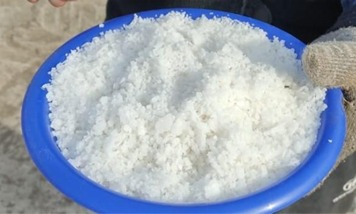
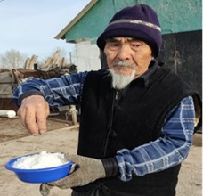
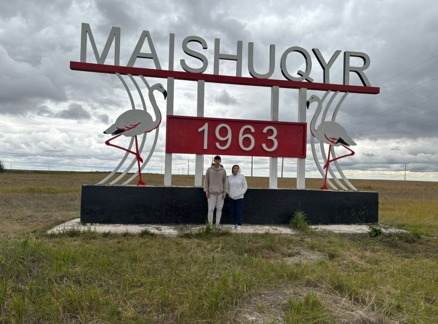
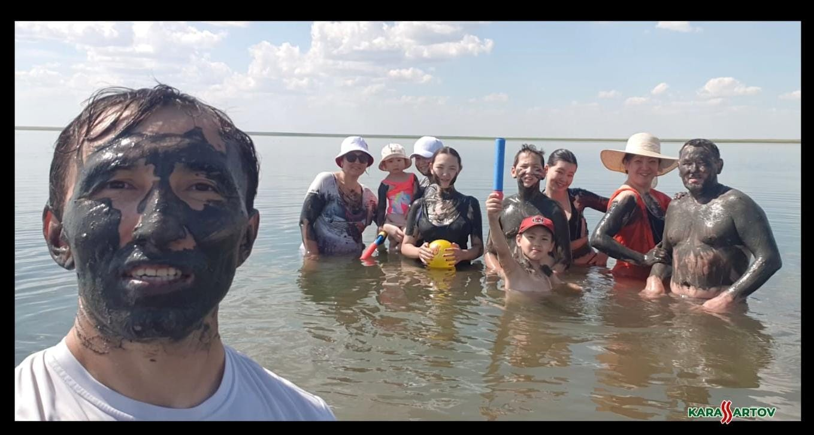

ГОЛОСА КОРГАЛЖЫНА
Люди рассказывают о Коргалжынском крае
Местные жители и гости региона делятся своими впечатлениями, воспоминаниями и знаниями о природе и озёрах Коргалжына.
Первый голос


Второй голос
Туристы рассказывают о посещении озера Майшукур, известного своей лечебной грязью и оздоровительными свойствами.


Третий голос
Житель рассказывает о пользе озёр.